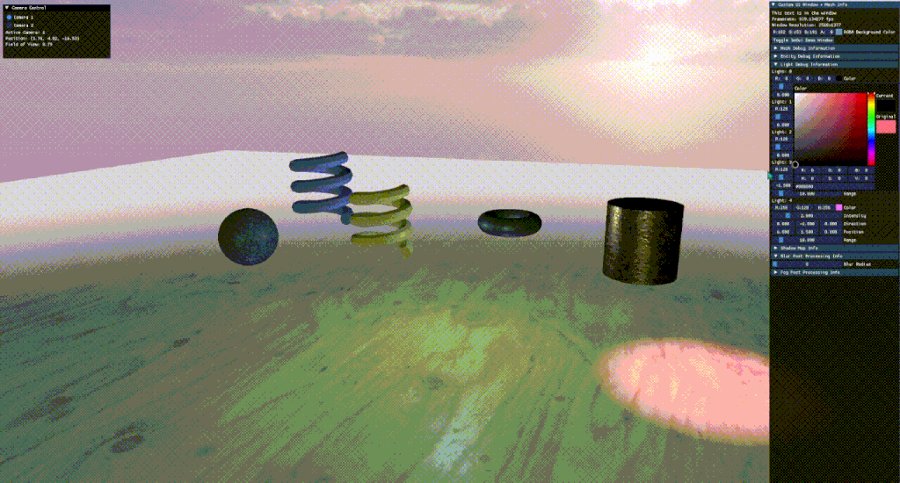
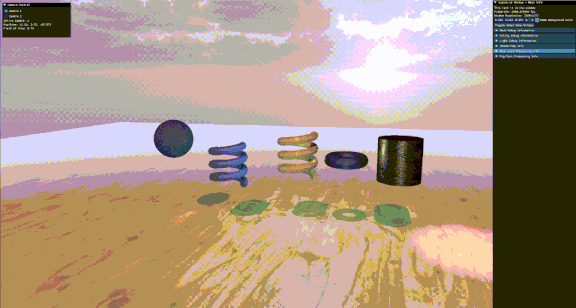
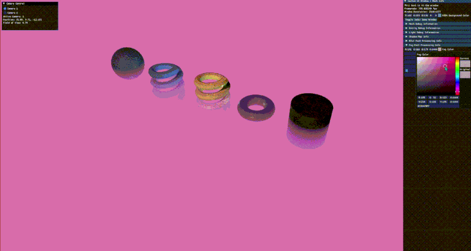

← All projects
DirectX 11 C++ HLSL Dear ImGui Visual Studio GitHub
Case Study
Custom Graphics Engine
Overview: A fully functional real-time 3D graphics engine built from scratch in C++ using DirectX 11, developed over the course of an advanced graphics programming course. The engine supports a complete rendering pipeline including physically-based shading, dynamic lighting, shadow mapping, and a custom content pipeline. Constructed incrementally from a blank Visual Studio project to a playable, hardware-accelerated build.
View on GitHub
Key Features
- DirectX 11 rendering pipeline
- Custom OBJ mesh loader
- PBR shading & gamma correction
- Normal & cube map support
- Shadow mapping
- Real-time camera system
- Box blur post-processing
- Multi-mode fog system
- Height-based fog
- Dear ImGui debug interface
- Playable build
Contributions
- Architected a real-time 3D rendering pipeline from scratch in C++ and DirectX 11 - devices, swap chains, render targets, and a custom OBJ mesh loader with material support.
- Authored HLSL shaders implementing physically-based rendering (PBR) with albedo, normal maps, and cube-map reflections, plus a dynamic shadow mapping system.
- Built a full post-processing suite: screen-space box blur and a multi-mode fog system (linear/smoothstep/exponential, with optional height-based falloff), all runtime-adjustable.
- Integrated Dear ImGui for a live debug UI, letting scene, shader, and post-processing parameters be tuned in real time during development.
- Managed the full content pipeline [texture loading, environment setup, camera system with real-time navigation] supporting a playable, hardware-accelerated build.



Impact
- Built a complete, hardware-accelerated rendering pipeline from a blank Visual Studio project within a single course term.
- Demonstrates end-to-end low-level graphics programming: device management, shader authoring, PBR shading, and custom post-processing effects.